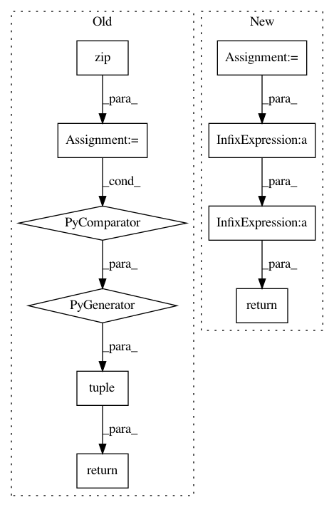

2b189592e0a169fc991bec98f39bbe8405e3440b,torchdiffeq/_impl/fixed_grid.py,Midpoint,_step_func,#Midpoint#Any#Any#Any#Any#,15
Before Change
order = 2
def _step_func(self, func, t, dt, y):
y_mid = tuple(y_ + f_ * dt / 2 for y_, f_ in zip(y, func(t + self.eps, y)))
return tuple(dt * f_ for f_ in func(t + dt / 2, y_mid))
class RK4(FixedGridODESolver):
order = 4
After Change
order = 2
def _step_func(self, func, t, dt, y):
half_dt = 0.5 * dt
y_mid = y + func(t + self.eps, y) * half_dt
return dt * func(t + half_dt, y_mid)
class RK4(FixedGridODESolver):
order = 4
In pattern: SUPERPATTERN
Frequency: 3
Non-data size: 10
Instances
Project Name: rtqichen/torchdiffeq
Commit Name: 2b189592e0a169fc991bec98f39bbe8405e3440b
Time: 2020-07-27
Author: 33688385+patrick-kidger@users.noreply.github.com
File Name: torchdiffeq/_impl/fixed_grid.py
Class Name: Midpoint
Method Name: _step_func
Project Name: rtqichen/torchdiffeq
Commit Name: 2b189592e0a169fc991bec98f39bbe8405e3440b
Time: 2020-07-27
Author: 33688385+patrick-kidger@users.noreply.github.com
File Name: torchdiffeq/_impl/solvers.py
Class Name: FixedGridODESolver
Method Name: _linear_interp
Project Name: rtqichen/torchdiffeq
Commit Name: 2b189592e0a169fc991bec98f39bbe8405e3440b
Time: 2020-07-27
Author: 33688385+patrick-kidger@users.noreply.github.com
File Name: torchdiffeq/_impl/interp.py
Class Name:
Method Name: _interp_evaluate